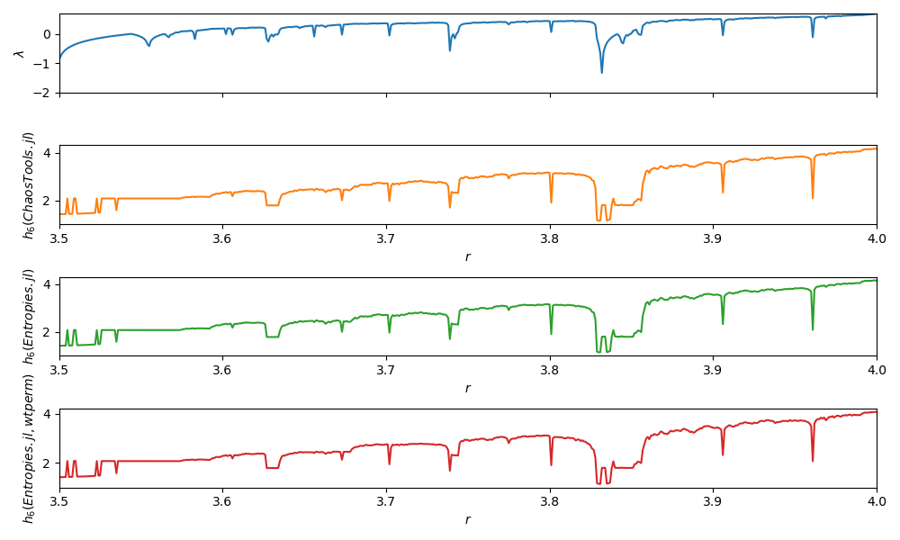

Permutation (symbolic)
Entropies.SymbolicPermutation — TypeSymbolicPermutation <: PermutationProbabilityEstimatorA symbolic, permutation based probabilities/entropy estimator.
Description
Permutations of a signal preserve ordinal patterns (sorting information). The implementation here is based on Bandt & Pompe et al. (2002)[BandtPompe2002].
From univariate time series
Consider the $n$-element univariate time series $\{x(t) = x_1, x_2, \ldots, x_n\}$. Let $\mathbf{x_i}^{m, \tau} = \{x_j, x_{j+\tau}, \ldots, x_{j+(m-1)\tau}\}$ for $j = 1, 2, \ldots n - (m-1)\tau$ be the $i$-th state vector in a delay reconstruction with embedding dimension $m$ and reconstruction lag $\tau$. There are then $N = n - (m-1)\tau$ state vectors.
For an $m$-dimensional vector, there are $m!$ possible ways of sorting it in ascending order of magnitude. Each such possible sorting ordering is called a motif. Let $\pi_i^{m, \tau}$ denote the motif associated with the $m$-dimensional state vector $\mathbf{x_i}^{m, \tau}$, and let $R$ be the number of distinct motifs that can be constructed from the $N$ state vectors. Then there are at most $R$ motifs; $R = N$ precisely when all motifs are unique, and $R = 1$ when all motifs are the same.
Each unique motif $\pi_i^{m, \tau}$ can be mapped to a unique integer symbol $0 \leq s_i \leq M!-1$. Let $S(\pi) : \mathbb{R}^m \to \mathbb{N}_0$ be the function that maps the motif $\pi$ to its symbol $s$, and let $\Pi$ denote the set of symbols $\Pi = \{ s_i \}_{i\in \{ 1, \ldots, R\}}$.
The probability of a given motif is its frequency of occurrence, normalized by the total number of motifs,
where the function $\mathbf{1}_A(u)$ is the indicator function of a set $A$. That is, $\mathbf{1}_A(u) = 1$ if $u \in A$, and $\mathbf{1}_A(u) = 0$ otherwise.
Permutation entropy can be computed over the probability distribution of symbols as $H(m, \tau) = - \sum_j^R p(\pi_j^{m, \tau}) \ln p(\pi_j^{m, \tau})$.
Estimation
To compute permutation entropy for a univariate signal
x, use the signatureentropy(x::AbstractVector, est::SymbolicPermutation; τ::Int = 1, m::Int = 3).The corresponding (unordered) probability distribution of the permutation symbols for a univariate signal
xcan be computed usingprobabilities(x::AbstractVector, est::SymbolicPermutation; τ::Int = 1, m::Int = 3).
Note: by default, embedding dimension $m = 3$ with embedding lag $1$ is used. You should probably make a more informed decision about embedding parameters when computing the permutation entropy of a real dataset. In all cases, $m$ must be at least 2 (there are no permutations of a single-element state vector, so need $m \geq 2$).
From multivariate time series/datasets
Permutation entropy can also be computed for multivariate datasets (either embedded or consisting of multiple time series variables). Then, just skip the delay reconstruction step, compute symbols directly from the $L$ existing state vectors $\{\mathbf{x}_1, \mathbf{x}_2, \ldots, \mathbf{x_L}\}$, symbolize each $\mathbf{x_i}$ precisely as above, then compute the quantity
To compute permutation entropy for a multivariate/embedded dataset
x, use the signatureentropy(x::Dataset, est::SymbolicPermutation).To get the probability distribution for a multivariate/embedded dataset
x, useprobabilities(x::Dataset, est::SymbolicPermutation).
Example
This example reproduces the permutation entropy example on the logistic map from Bandt and Pompe (2002).
using DynamicalSystems, PyPlot, Entropies
ds = Systems.logistic()
rs = 3.5:0.001:4
N_lyap, N_ent = 100000, 10000
m = 6 # Symbol size/dimension
# Generate one time series for each value of the logistic parameter r
lyaps, hs_entropies, hs_chaostools = Float64[], Float64[], Float64[]
hs_wtperm = Float64[]
for r in rs
ds.p[1] = r
push!(lyaps, lyapunov(ds, N_lyap))
# For 1D systems `trajectory` returns a vector, so embed it using τs
# to get the correct 6d dimension on the embedding
x = trajectory(ds, N_ent)
τs = ([-i for i in 0:m-1]...,) # embedding lags
emb = genembed(x, τs)
push!(hs_entropies, Entropies.genentropy(emb, SymbolicPermutation(), base = Base.MathConstants.e))
push!(hs_wtperm, Entropies.genentropy(emb, SymbolicWeightedPermutation(), base = Base.MathConstants.e))
# Old ChaosTools.jl style estimation
push!(hs_chaostools, permentropy(x, 6))
end
f = figure(figsize = (10,6))
a1 = subplot(411)
plot(rs, lyaps); ylim(-2, log(2)); ylabel("\$\\lambda\$")
a1.axes.get_xaxis().set_ticklabels([])
xlim(rs[1], rs[end]);
a2 = subplot(412)
plot(rs, hs_chaostools; color = "C1"); xlim(rs[1], rs[end]);
xlabel("\$r\$"); ylabel("\$h_6 (ChaosTools.jl)\$")
a3 = subplot(413)
plot(rs, hs_entropies; color = "C2"); xlim(rs[1], rs[end]);
xlabel("\$r\$"); ylabel("\$h_6 (Entropies.jl)\$")
a4 = subplot(414)
plot(rs, hs_wtperm; color = "C3"); xlim(rs[1], rs[end]);
xlabel("\$r\$"); ylabel("\$h_6 (Entropies.jl, wtperm)\$")
tight_layout()
savefig("permentropy.png")
Utility methods
Some convenience functions for symbolization are provided.
Entropies.symbolize — Functionsymbolize(x::Dataset, est::SymbolicPermutation) → Vector{Int}Symbolize the vectors in x using Algorithm 1 from Berger et al. (2019)[Berger2019].
The symbol length is automatically determined from the dimension of the input data vectors.
Example
Computing the order-5 permutation entropy for a 7-dimensional dataset.
using DelayEmbeddings, Entropies
D = Dataset([rand(7) for i = 1:1000])
symbolize(D, SymbolicPermutation(5))Entropies.encode_motif — Functionencode_motif(x, m::Int = length(x)) → IntEncode the length-m motif x (a vector of indices that would sort some vector v in ascending order) into its unique integer symbol, using Algorithm 1 in Berger et al. (2019)[Berger2019].
Example
v = rand(5)
# The indices that would sort `v` in ascending order. This is now a permutation
# of the index permutation (1, 2, ..., 5)
x = sortperm(v)
# Encode this permutation as an integer.
encode_motif(x)- BandtPompe2002Bandt, Christoph, and Bernd Pompe. "Permutation entropy: a natural complexity measure for time series." Physical review letters 88.17 (2002): 174102.
- Berger2019Berger, Sebastian, et al. "Teaching Ordinal Patterns to a Computer: Efficient Encoding Algorithms Based on the Lehmer Code." Entropy 21.10 (2019): 1023.
- Berger2019Berger, Sebastian, et al. "Teaching Ordinal Patterns to a Computer: Efficient Encoding Algorithms Based on the Lehmer Code." Entropy 21.10 (2019): 1023.